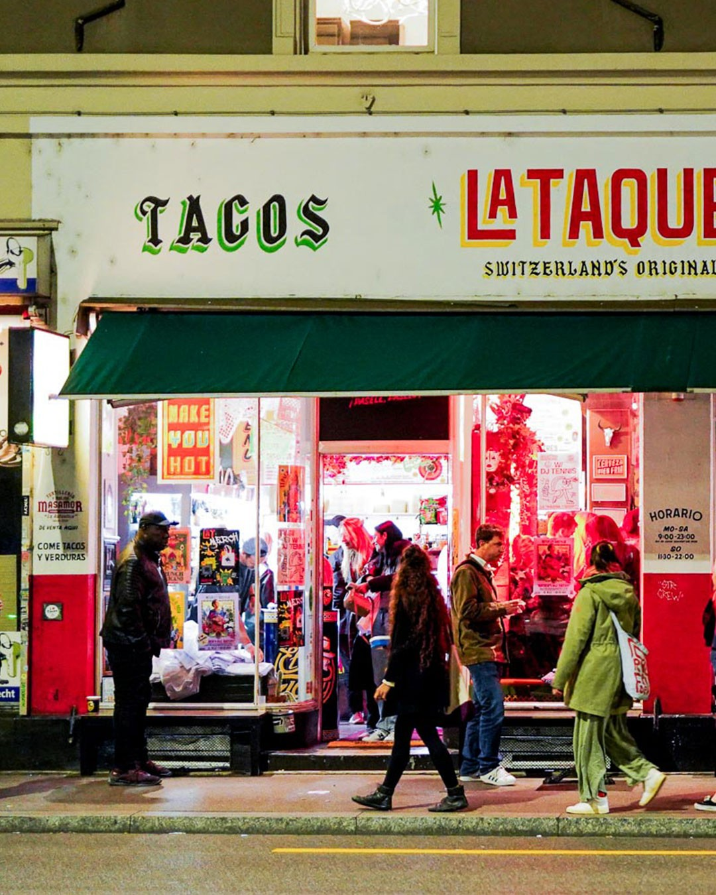
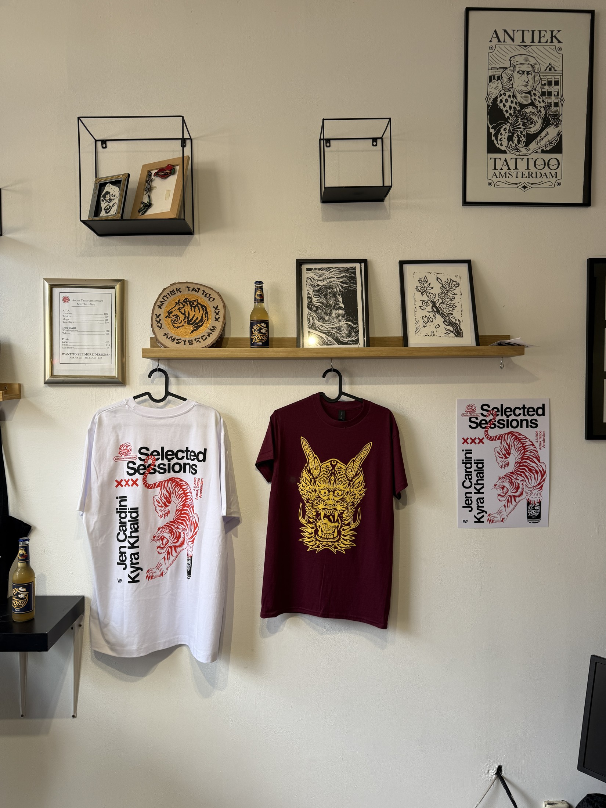
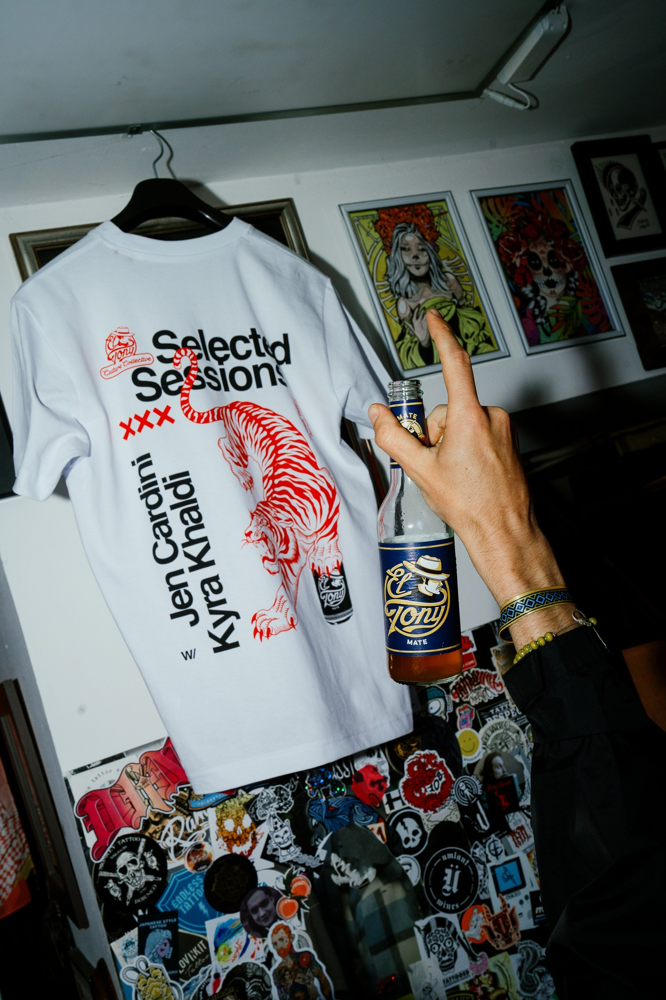
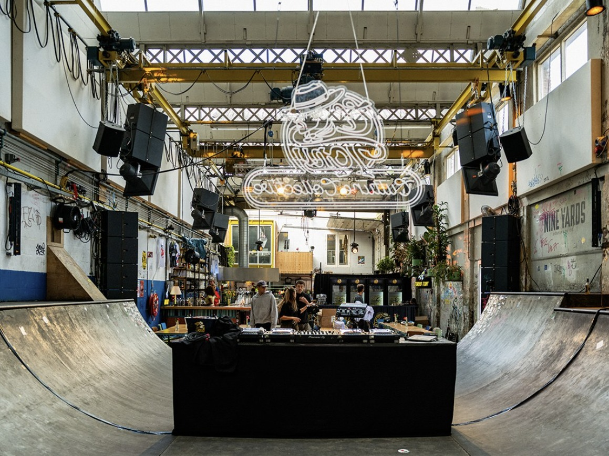
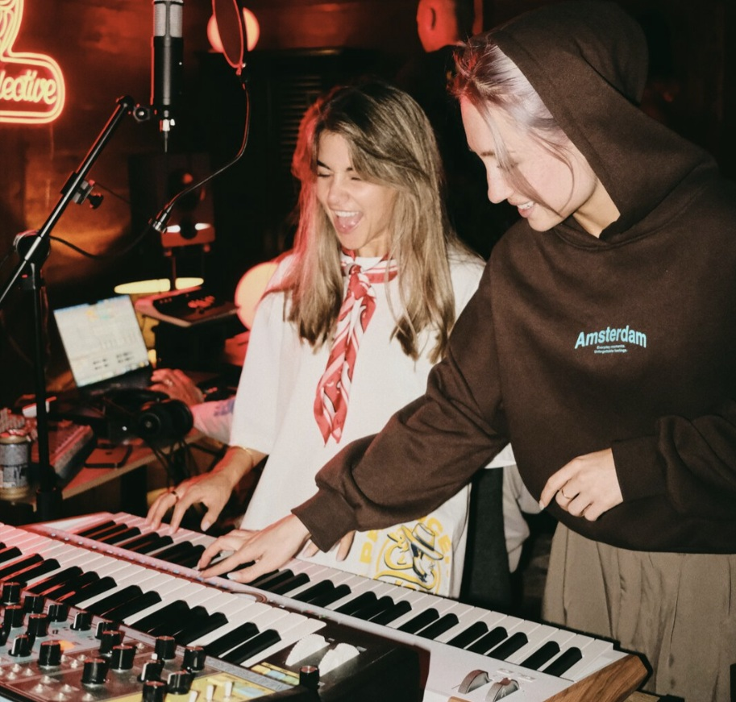

Orte mit eigenem Charakter
Eine Taqueria, ein Tattoostudio, eine Skatehalle: Jede Location bringt ihren eigenen Charakter mit. Die Sessions finden dort statt, wo lokale Kultur bereits gelebt wird.

Case Study
Eine Plattform für elektronische Musik, gemeinsam mit El Tony Mate entwickelt.
Teil der Szene statt nur Sponsor
Gemeinsam mit El Tony Mate haben wir eine Plattform entwickelt, mit der die Marke einen eigenen Beitrag zur elektronischen Musikkultur leistet. Im Mittelpunkt stehen zwei Formate: Selected Sessions und die DJ & Producer Academy.
Ergebnisse
Stunden Wiedergabezeit
Selected Sessions, allein auf den Kanälen von BeatportBeiträge in Medien und Social Media
Online, Print und Social Media, 2025/26geschätzte Aufrufe der Berichterstattung
2025/26Selected Sessions
in Zürich, Basel, Amsterdam und Marseilleeuropäische Märkte
Schweiz / Niederlande / Frankreich / Ibizaeingereichte Remixe
pro Academy-Ausgabe01 / Selected Sessions
DJ-Sets im kleinen Rahmen, an unerwarteten Orten: vom Tattoostudio bis zur Taqueria. Gemeinsam mit Medienpartner Beatport wurden die Auftritte als Livestream-Serie aufgezeichnet und verbreitet.

Eine Taqueria, ein Tattoostudio, eine Skatehalle: Jede Location bringt ihren eigenen Charakter mit. Die Sessions finden dort statt, wo lokale Kultur bereits gelebt wird.

Die Gestaltung der Selected Sessions findet sich auf Postern und T-Shirts wieder. So wird das Format auch abseits der Auftritte sichtbar.

El Tony Mate ist gemeinsam mit Artwork und Merchandise präsent. Das Produkt fügt sich in die Gestaltung und das Umfeld der Sessions ein.
Lokale Talente / auf der Bühne und im Video
Lokale Artists spielten als Support-Acts neben den Headlinern. Auch abseits der Sets waren sie Teil des Formats: In kurzen Videoserien zeigten sie ihre Lieblingsorte in ihrer Stadt.
Mit ihren persönlichen Empfehlungen gaben sie dem Publikum einen Einblick in die lokale Kultur. So boten die Sessions auch über die Musik hinaus etwas zu entdecken.

Selected Sessions / eine Skatehalle wird zum Musikort
Seth Troxler bei den Selected Sessions in Amsterdam
Sieben Sessions haben allein auf den Kanälen von Beatport über 300’000 Stunden Wiedergabezeit erzielt. Kleine Räume, weltweite Reichweite.
Alle Sessions ansehen| Stadt | Artist |
|---|---|
| Zürich | DJ Tennis |
| Zürich | EDE |
| Amsterdam | Young Marco |
| Basel | Sofia Kourtesis |
| Marseille | Bambounou |
| Amsterdam | Jen Cardini |
| Amsterdam | Seth Troxler |
02 / DJ & Producer Academy
Die DJ & Producer Academy gibt aufstrebenden Artists Zugang zu Weiterbildung, persönlicher Begleitung und Auftrittsmöglichkeiten.
Die Reichweite der Selected Sessions wurde genutzt, um die Academies und ihre Coaching-Angebote bekannter zu machen. So führte die Aufmerksamkeit für die Sessions zu neuen Chancen für aufstrebende Talente.
Pro Ausgabe werden mehr als 300 Remixe eingereicht. Bei der Producer Academy auf Ibiza arbeiteten ausgewählte Teilnehmende eine Woche lang mit den Coaches SKALA und Kid Simius im Studio.

El Tony Mate / DJ & Producer Academy
03 / Medien
Die Formate fanden auch über den Dancefloor hinaus Beachtung: 194 redaktionelle Beiträge und Veröffentlichungen auf Social Media, unter anderem bei Complex, Notion, Glamcult, Numéro und DJ Mag.
Berichtet haben unter anderem
Complex · Notion · Glamcult · Numéro · DJ Mag · VICE · Metal Magazine · FAZEmag · Electronic Groove
Was den Unterschied machte
Die Marke investierte in aufstrebende Talente und in Erlebnisse, an denen die Szene gerne teilnahm. Selected Sessions schufen Inhalte und Reichweite. Die Academy eröffnete Artists Möglichkeiten, sich weiterzuentwickeln. Zusammen machten die Formate El Tony Mate zu einem anerkannten Teil der Community.
Erlebnisse schaffen, die vor Ort etwas auslösen.
Und ihre Geschichten digital weitertragen.
Unser Ansatz
Hier entsteht Vertrauen. Hier werden Geschichten erzählt. Und hier entscheiden Menschen, welche Marken für sie eine Rolle spielen.
Deshalb setzen wir bei den Menschen und ihrem Umfeld an. Wir entwickeln Erlebnisse vor Ort und Inhalte, die diese Geschichten weitertragen.
Lass uns dein Projekt besprechen
Was möchtest du mit deiner Marke bewegen?
hello@sendreturn.ch
Du möchtest mit deiner Marke Teil der Kultur werden?
Erzähl uns, was du vorhast.